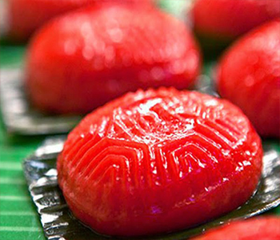

Bahan Kulit:
- 225 g tepung ketan
- 50 g gula tepung
- 75 g kentang, dikukus, dihaluskan
- 1/2 sdt garam
- 135 ml santan hangat
- pewarna merah cabai
- pewarna hijau muda
Bahan Isi:
- 100 g kacang hijau kupas, direndam 1 jam
- 200 ml santan dari 1/2 butir kelapa
- 50 g gula pasir
- 1 lbr daun pandan
- 1/4 sdt garam
Cara Membuat:
- Isi: kukus kacang hijau 20 menit sampai mekar. Blender kacang hijau dan sedikit santan. Tuang ke wajan, tambahkan sisa santan, gula pasir, daun pandan, dan garam. Masak sambil diaduk dengan api kecil sampai kalis. Dinginkan. Sisihkan.
- Kulit: campur tepung ketan, gula tepung, kentang, dan garam. Aduk rata.
- Masukkan santan sedikit-sedikit sambil diuleni sampai kalis
- Bagi adonan menjadi 2 bagian, masing2 tambahkan pewarna merah cabai dan hijau muda. Aduk rata..
- Ambil 30 gram adonan, letakkan pada cetakan yg telah ditaburi tepung ketan, pipihkan adonan, beri isi. Tutup dengan adonan lagi dan rapikan bentuknya, lalu padatkan. Keluarkan dari cetakan.
- Letakkan di atas daun pisang yang dioles sedikit minyak.
- Kukus 12 menit dengan api sedang setiap 2 menit dibuka kukusannya.
- Panas-panas, oleskan minyak tipis-tipis